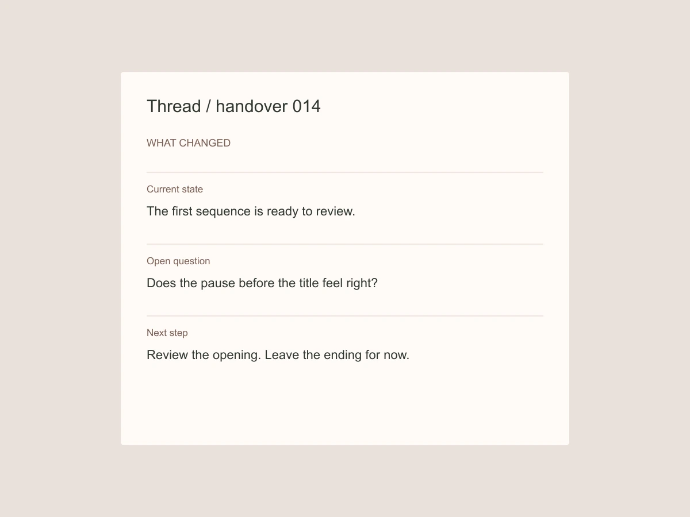

Collaboration / 2025
Thread — A handover that explains what happens next.
Thread is a handover concept for small creative teams. It collects the decision, the material and the next action into one readable note. The study focuses on the moment when work changes hands, not on replacing an entire project-management system.

What does the next person need before they can begin?
A handover often arrives as a link followed by several chat messages. The link may be correct while the state of the work remains unclear. Is it ready for review? Is feedback required today? Which part is still uncertain? I mapped these questions into a small repeatable structure.
The decision
The note has three parts: current state, open question and next step. Attachments sit beneath the explanation rather than preceding it. The recipient can acknowledge the next step without implying approval of every detail. This makes the response more precise than a generic checkmark.
A small interaction / compare the language
Following the detail
A narrow history records meaningful changes in plain language. It does not log every keystroke. The current note is always the primary surface; earlier versions are available through a simple disclosure. The interface makes responsibility visible without turning a human conversation into a status dashboard.

The tradeoff
A structured note can become another form to fill out. I limited the required content to the next action and let the other fields remain short. The concept is most appropriate for consequential handovers, not for every small message exchanged during a day.
What I would test next
The design became clearer when I stopped treating acknowledgment as approval. A person can confirm that they understand the next step while still disagreeing with a proposal. That distinction is small in the interface and large in the working relationship.